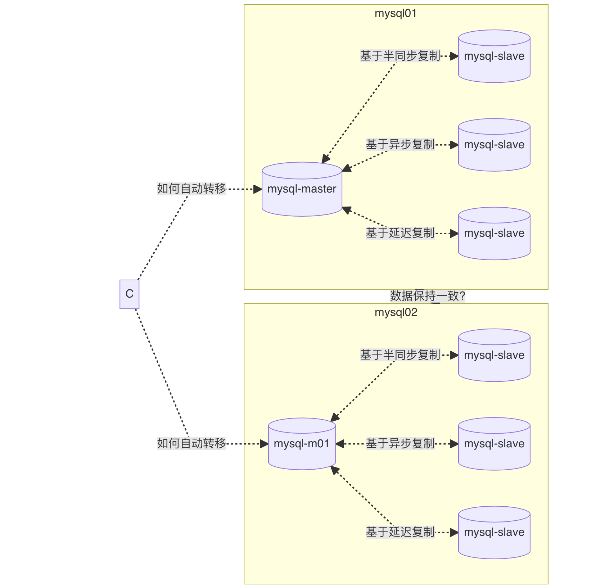

title: mysql HA
date: 2024-01-10 14:29:27
tags: MySQL
categories: MySQL

- 数据的一致性？
- 自动转移故障？
- 监控数据库？
第三方
MMM MHA
proxySQL
官方： innodb Cluster Group Replication
** 1.什么是MMM **
MMM（MySQL的Master Master复制管理器）是一个支持双主故障转移和双主日常管理的脚本程序。Mmm 是用 Perl 开发的。它主要监控和管理 MySQL master master 复制。虽然叫双主复制，但只允许一个主同时写，另一个备用主提供部分读服务，加速主主切换时备用主的预热，可以说MMM脚本程序一方面实现了failover的功能，其内部附加工具也可以实现多个Slave的读负载均衡。
** 2.应用场景 **
MMM 提供了自动和手动两种方法来删除一组服务器中复制延迟高的服务器的虚拟 ip。同时还可以备份数据，实现两个节点之间的数据同步。因为MMM不能完全保证数据的一致性，所以mmm适用于对数据一致性要求不高，但又想最大程度保证业务可用性的场景。对于数据一致性要求高的业务，不推荐mmm。
** 3. MMM 功能 **
MMM 是一个灵活的脚本程序
基于perl语言的实现
用于监控和故障转移mysql复制
管理 MySQL master 主复制的配置
MHA以最小的停机时间执行自动主故障转移和从服务器升级，通常在10-30秒内。MHA防止了复制一致性问题，并节省了必须获取额外服务器的费用。所有这些都没有性能下降，没有复杂性（易于安装），也不需要更改现有部署。
MHA还提供计划的在线主交换机，在短短几秒（0.5-2秒）的停机时间（仅阻止写入）内，将当前运行的主服务器安全地更改为新的主服务器
MHA提供以下功能: 高可用性、数据完整性和在线部署服务
自动监控master和故障转移
交互式（手动启动）主故障转移
非交互式主故障转移
在线切换主服务器到其他主机
基于RPM包安装
基于源码安装
## Install DBD::mysql if not installed
$ tar -zxf mha4mysql-node-X.Y.tar.gz
$ perl Makefile.PL
$ make
$ sudo make install
架构图：
规划：
2.1 安装依赖项
1. 安装第三方
epel源地址: https://docs.fedoraproject.org/en-US/epel/
[root@mha-manager ~]# yum install perl-DBD-MySQL perl-Config-Tiny perl-Log-Dispatch perl-Parallel-ForkManager
[root@mha-manager ~]# yum -y install mha4mysql-node-0.54-0.el6.noarch.rpm
[root@mha-manager ~]# yum -y install mha4mysql-manager-0.55-0.el6.noarch.rpm
[root@data-server ~]# dnf -y install mha4mysql-node-0.54-0.el6.noarch.rpm
[root@web-server ~]# dnf -y install mha4mysql-node-0.54-0.el6.noarch.rpm
masterha_check_repl # 检查 MySQL 复制状况
masterha_check_status #检测当前 MHA 运行状态
masterha_manager #启动 manager的脚本
masterha_master_switch #控制故障转移（自动或者手动）
masterha_stop #关闭manager
masterha_check_ssh # 检查 MHA 的 SSH 配置状况
masterha_conf_host #添加或删除配置的 server 信息
masterha_master_monitor #检测 master 是否宕机
masterha_secondary_check
[root@mha-manager ~]# cat /etc/mha/app.cnf
[server default]
# mysql user and password
user=mycat
password=mycat
# working directory on the manager
manager_workdir=/etc/mha/app
# manager log file
manager_log=/var/log/mha/app/app1.log
# working directory on MySQL servers
remote_workdir=/var/log/masterha/app1
[server1]
hostname=192.168.212.22
candidate_master=1
check_repl_delay=0
[server2]
hostname=192.168.212.149